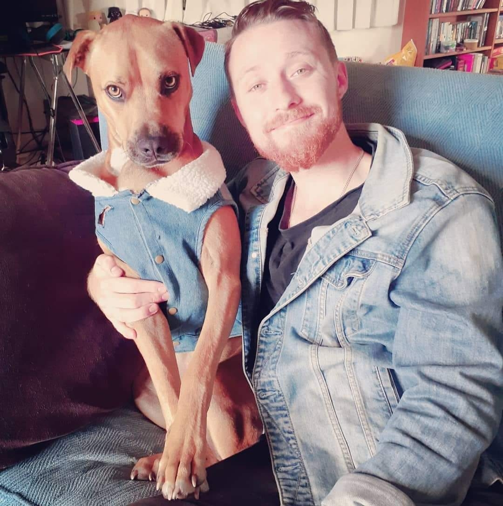

26 Margot Street, Epsom, Auckland, 1051
Henry Enrico Turner

- Age 3 Years Old
- Breed Rhodesian Ridgeback Cross
- Sex male
- Weight/size 27kg medium size
- Neuter status neutered
- Vaccinations up to date
- Training puppy school graduate
I know I'm a mix but I'm all the best bits
About my breed — rhodesian ridgeback x, Shar-pei, staffy x
- I get my golden glow and floppy ears from the Rhodesian Ridgeback. I have the wrinkles of a Shar-Pei, the smokey eyes of a Staffy, and the cuddling needs of a human.
- I need daily exercise but I love a good sleep in too.
- I am an affectionate and loving mix, so I love a good snuggle!
- I am a devoted, loyal and affectionate companion. Protective of my owners and property, but I don’t bark unless there is something I’m concerned about or feel threatened by. Mum is working with me to desensitize bikes, scooters, and cats.
- I’m a very intelligent pupper, I want to impress, I respond well to training, and can learn new games and tricks fast!
Things I like
- Falling asleep in the sun
- Chasing sticks or a ball
- Playing games with Mum and Dad
- Exploring and going on long walks
- Swimming in the ocean
- Lying in weird positions
- Baths with duckduck
Adoption
Saving Hope Foundation — June 2018
Registered Charitable Trust #2678031
Education
- Dogguru Orewa Beginners Course — Graduate
- 4Dogsake Doggy Daycare, Silverdale (23 Sept 2018 - 21 Oct 2018)
"I enjoyed school with the other puppys and learnt very fast! The trainer said I was eager to learn and impress. I am looking forward to starting secondary schooling over summer."
Health and Grooming
"My mum keeps me really well groomed with regular pedicures, baths once a month, and if I have been for a muddy walk I get an outside bath. Every month I am given a flea treatment and twice a year a worming tablet, I’m very good at taking medicine. I have been to the vet a few times and behaved really well."